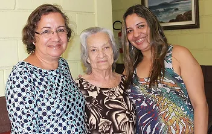

Nossa História
Em 1993, a Srª. Lindaura Moura de Souza trabalhava como atendente de enfermagem em um asilo que estava se dissolvendo. 11 idosos eram atendidos neste asilo e que, por não disporem de recursos, não teriam para onde ir. Sensibilizada com a situação, D. Lindaura pediu à sua mãe, D. Walquíria Moura de Souza, que deixasse levar os mesmos para sua própria casa. E foi assim que nasceu a ASSOCIAÇÃO LAR DE AMPARO VOVÓ WALQUIRIA
Missão

Nossa missão é cuidar dos nossos idosos com amor, respeito e dedicação, proporcionando um lar onde eles possam viver com tranquilidade e segurança. Valorizamos a escuta atenta às necessidades de cada pessoa e buscamos oferecer atenção especial a cada residente, garantindo que todos se sintam acolhidos e respeitados.
Visão

Queremos ser um lar reconhecido pela nossa dedicação e pelo cuidado humanizado que oferecemos. Nosso compromisso é ser um lugar de confiança para as famílias, onde cada idoso receba o cuidado necessário para viver com qualidade de vida e alegria. Buscamos sempre criar um ambiente de harmonia e respeito, onde nossos residentes possam se sentir valorizados e amparados.
Valores

No Lar de Amparo Vovó Walquiria, valorizamos profundamente a dignidade, o cuidado e o bem-estar de cada idoso. Buscamos promover uma convivência harmoniosa e transparente, onde todos se sintam parte de uma verdadeira família, recebendo a atenção especial que cada um merece. Acreditamos que a escuta ativa e o acolhimento cuidadoso são essenciais para garantir um lar seguro e feliz.
Saiba mais
Nossa Equipe
Fundadoras
Walquíria Moura de Souza
Lindaura Moura de Souza
Diretoria
Presidente: Iva Cristina Moura de Almeida Monteiro
Vice Presidente: Pastor Cesar Praxedes
Secretária: Adriano Moura de Santana
Tesoureiro: Kaio Cesar Veiga Reis
Conselho Fiscal: Carlos Silvestre da Silva Filho
Administração
Auxiliar Administrativo: Kaio Cesar Veiga Reis
Auxiliar Tesouraria: Adriano Moura de Santana
Equipe Interdisciplinar
Médico: Drº Lucas Pimenta CRM/SP: 1750667
Enfermeira: Luciana Alves da Silva COREN-SP: 62985
Fisioterapeutas: Drº Fabio Fernandes R. Teixeira CREFITO-3: 88109-F
Fisioterapeuta Drº Luiz Fabiano G. da Silva CREFITO-3: 82947-F
Nutricionista: Tatiana Priscila Martin Groessler CRN-3: 21582
Psicologa Drª Patrícia Martins Goulart CRP-6ª: 128760
Enfermagem
Auxiliar: Samara Pereira Gomes COREN/SP:764062
Téc.: Michelly Mendes COREN/SP:1165785
Téc.: Wanda Olivia Monteiro Ricardo COREN/SP:791176
Téc.: Márcia de Araujo Galindo COREN/SP:1156304
Téc.: Kaio Cesar Veiga Reis COREN/SP:1127196
Téc.: Adriano Moura da Silva COREN/SP: 1366435
Outros
Vera Lúcia Alves de Melo
Lucia Ester Alves
Sueli de Almeida Borges
Eurides Celestina da Conceição
Nilmo Paixão dos Santos Silva
Cristiano Fiqueira Marques Silva